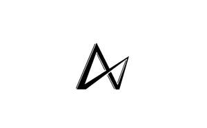
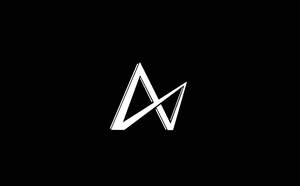

Trade Mark Journal No.2026/005 30 January 2026
UK00004325843 18 January 2026 (18,21,25,28)
Mark 1

Mark 2

- Class 18
- Sport bags; Sports bags; Bags for sports; Sports packs; Holdalls for sports clothing; Bags for sports clothing; All purpose sport bags; All-purpose sports bags; General purpose sport trolley bags; Shoulder straps; Straps for luggage; Luggage straps; Harness straps; Straps (Harness -); Shoulder belts [straps] of leather; Chin straps, of leather; Straps (Leather shoulder -); Leather shoulder straps; Stirrup straps; Straps for suitcases; Straps for skates; Skates (Straps for -); Lockable luggage straps; Leather straps; Handbag straps; Straps (Leather -); Leather luggage straps; Straps for handbags; Spur straps; Cribbing straps for horses; Soldiers' equipment (Straps for -); Straps for soldiers' equipment; All-purpose leather straps; Gym bags; Athletic bags; Dog collars; Dog leashes; Dog shoes; Dog waste bag dispensers adapted for use with leashes; Dog clothing; Cat collars; Dog bellybands; Leather leashes; Leashes (Leather -); Horse collars; Dog parkas; Raincoats for pet dogs; Dog apparel; Dog coats; Animal leashes; Rawhide chews for dogs; Electronic pet collars; Straps of leather [saddlery]; Dog leads; Leather shoulder belts; Belts (Leather shoulder -); Clothing for dogs; Collars for pets; Collars for cats; Wrist mounted carryall bags; Straps for coin purses; Sling bags.
- Class 21
- Drinking bottles for sports; Sports bottles [empty]; Bottle coolers; Wine bottle cradles; Sports bottles sold empty; Water bottles; Drinking bottles; Bottles; Plastic water bottles; Bottle gourds; Gourds (Bottle -); Perfume bottles; Bottle buckets; Aluminum water bottles; Bottle openers; Bottle pourers; Bottle cradles; Water bottles for bicycles; Glass bottles; Plastic water bottles [empty]; Plastic bottles; Aluminum water bottles, empty; Bottle brushes; Empty water bottles for bicycles; Bottle stands; Covers for water bottles; Vacuum pumps for wine bottles; Bottle coolers [receptacles]; Glass stoppers for bottles; Feeding bottle brushes; Beer jugs; Empty spray bottles; Siphon bottles for carbonated water; Wine drip collars specially adapted for use around the top of wine bottles to stop drips.
- Class 25
- Clothing; Knitwear [clothing]; Jackets [clothing]; Ready-to-wear clothing; Woolen clothing; Furs [clothing]; Garments for protecting clothing; Layettes [clothing]; Clothing layettes; Linen clothing; Headbands [clothing]; Headbands for clothing; Gloves [clothing]; Gloves as clothing; Clothes; Aprons [clothing]; Maternity clothing; Kerchiefs [clothing]; Jerseys [clothing]; Denims [clothing]; Shorts [clothing]; Cashmere clothing; Capes (clothing); Oilskins [clothing]; Gabardines [clothing]; Silk clothing; Leather clothing; Clothing of leather; Leather (Clothing of -); Collars [clothing]; Parts of clothing, footwear and headgear; Veils [clothing]; Knitted clothing; Windproof clothing; Hoods [clothing]; Corsets [clothing, foundation garments]; Embroidered clothing; Wristbands [clothing]; Bandeaux [clothing]; Belts [clothing]; Belts for clothing; Rainproof clothing; Casual clothing; Waterproof clothing; Visors [clothing]; Jackets being sports clothing; Jackets (Stuff -) [clothing]; Stuff jackets [clothing]; Bottoms [clothing]; Playsuits [clothing]; Clothing for leisure wear; Ready-made clothing; Latex clothing; Trunks being clothing; Infant clothing; Woven clothing; Drawers as clothing; Leisure clothing; Clothing for sports; Sports clothing; Drawers [clothing]; Ties [clothing]; Athletic clothing; Clothing for children; Muffs [clothing]; Bodies [clothing]; Clothing for babies; Tops [clothing]; Clothing for infants; Clothing for cycling; Weatherproof clothing; Fabric belts [clothing]; Pockets for clothing; Water-resistant clothing; Triathlon clothing; Handwarmers [clothing]; Clothing for skiing; Beach clothing; Thermal clothing; Cowls [clothing]; Chaps (clothing); Men's clothing; Fishing clothing; Braces for clothing; Mitts [clothing]; Dance clothing; Footwear for use in sport; Footwear for sport; Sport shoes; Boots for sport; Sport shirts; Clothes for sport; Sport coats; Sport stockings; Sports jerseys and breeches for sports; Footwear for sports; Sports footwear; Sports jerseys; Sports singlets; Sports shoes; Footwear not for sports; Sports jackets; Combative sports uniforms; Sports vests; Sports wear; Boots for sports; Sports socks; Sports garments; Clothes for sports; Sports shirts; Sports pants; Sports clothing [other than golf gloves]; Sports bras; Sports bibs; Sports caps; Sports headgear [other than helmets]; Sports overuniforms; Athletics footwear; Sports over uniforms; Cleats for attachment to sports shoes; Articles of sports clothing; Clothing for wear in wrestling games; Bra straps; Straps for bras; Shoulder straps for clothing; Gaiter straps; Straps (Gaiter -); Shoe straps; Bra straps [parts of clothing]; Trouser straps; Bra strap extenders; Gym shorts; Gym suits; Gym boots; Yoga shoes; Jogging pants; Boxing shoes; Jogging shoes; Jogging outfits; Yoga gloves ; Yoga pants; Yoga shirts; Exercise wear; Boxing shorts; Gymwear; Gymnastic shoes; Tennis sweatbands; Clothing for gymnastics; Yoga socks; Detachable collars; Collar guards for protecting clothing collars; Collar protectors; Removable collars; Collar liners for protecting clothing collars.
- Class 28
- Lifting grips for weight lifting; Weight lifting belts; Wrist straps for weightlifting; Weight lifting gloves; Dumbbells for weight lifting; Barbells for weight lifting; Dumb-bells [for weight lifting]; Dumbbell shafts for weight lifting; Weight lifting benches; Dumb-bell shafts [for weight lifting]; Belts (Weight lifting -) [sports articles]; Weight lifting belts [sports articles]; Yoga straps; Restraint straps for bodyboards; Bar-bells [for weight lifting]; Weight lifting machines for exercise; Leg weights for exercising; Back supports [belts] for weightlifters; Shoulder pad laces for athletic use; Ankle and wrist weights for exercise; Wrist and ankle weights for exercise; Exercise benches; Sit up benches; Gymnastic benches; Benches for gymnastic use; Benches for sporting use; Squat racks; Dumbbell racks; Pool table cushions; Billiard table cushions; Table tennis ball serving machines; Pucks for playing hockey on game tables; Table cushions being parts of billiard tables; Paddles for playing hockey on game tables; Table cushions being parts of snooker tables; Billiard ball racks; Leg guards [cricket pads]; Table football tables; Tables for table football; Gym balls for yoga; Gym balls; Jungle gyms [play equipment]; Baby gyms; Fitness exercise machines; Exercise treadmills; Treadmills for use in physical exercise; Elliptical trainers; Indoor fitness apparatus; Gym chalk for improving hand grip in sports activities; Fitness steppers; Exercise weights; Leg weights for sports training; Pilates toning balls; Kettlebells; Exercise trampolines; Rowing machines for fitness purposes; Wrist weights for exercise; Swimming equipment; Clubs for gymnastics; Dumbbells; Body training apparatus [exercise]; Water rowing machines for fitness purposes; Exercise bars; Body-building apparatus [exercise]; Volleyball equipment; Gymnastic training stools; Badminton equipment; Exercise bikes; Climbing units [playground equipment]; Machines incorporating weights for use in physical exercise; Dumb-bells; Tennis uprights [sports equipment]; Storage racks for exercise weights; Leg weights for athletic use; Hoops for exercise; Yoga swings; Abdominal wheel rollers for fitness purposes; Spring bars for exercise; Golf club bags; Punching balls [for boxing practice]; Swings [playground equipment]; Exercise steppers; Chest exercisers; Belts for weightlifting; Punching bags for boxing; Exercise balls; Dog toys; Toy dogs; Snuffle mats being dog toys; Golf bag tags of leather; Pet toys made of rope; Surfboard leashes; Imitation bones being toys for dogs; Toys for dogs; Shoulder pad elastic for athletic use.
AXN FITNESS Ltd